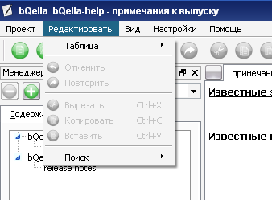
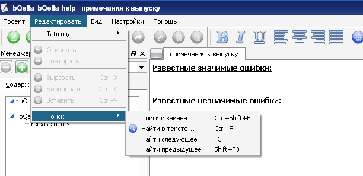
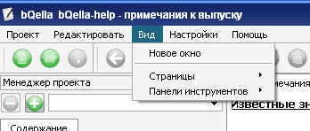
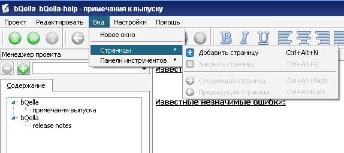

Меню
Меню bQella переведено на русский, что упрощает его использование
Меню содержит пункты:
- Проект - содержит основные функции раюоты с проектом
- Создание нового проекта(модуля)
- Открытие проекта
- Импорт проекта или книги
- Экспорт
- Редактировать - как видно из названия, этот пункт меню содержит
функии редатирования
- Вид - содержит пункты о изменении внешнего вида программы и работы с
несколькими вкладками или окнами программы
- Настройки - содержит пункты с настройками программы или смене языка
программы
- Помощь - содержит пункты "О программе" с описанием программы, а
также "Помощь"
А теперь, как это выглядит в картинках:
Меню "Проект"

Подменю "Импорт"

Меню "Редактирование"

Подменю "Таблица"

Создание таблицы

Поиск

Меню "Вид"

Подменю "Вкладки"

Подменю "Панели инструментов"

Меню "Настройки"

Меню "Помощь"